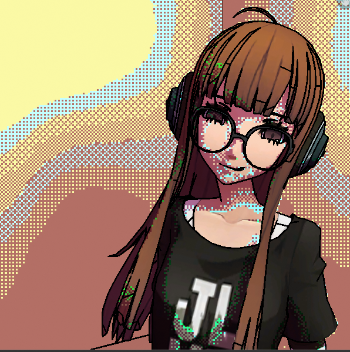
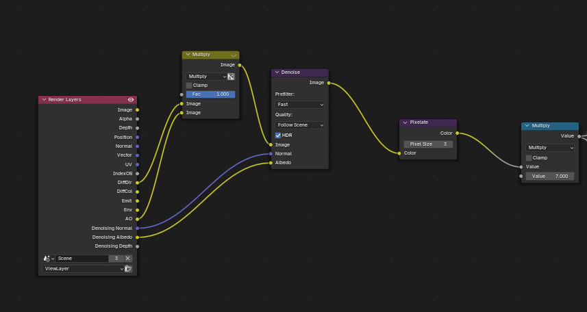
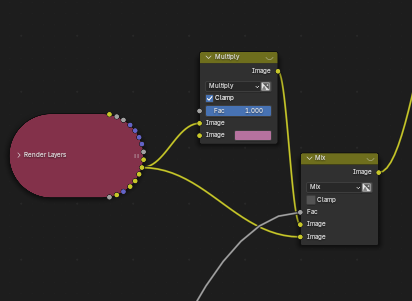
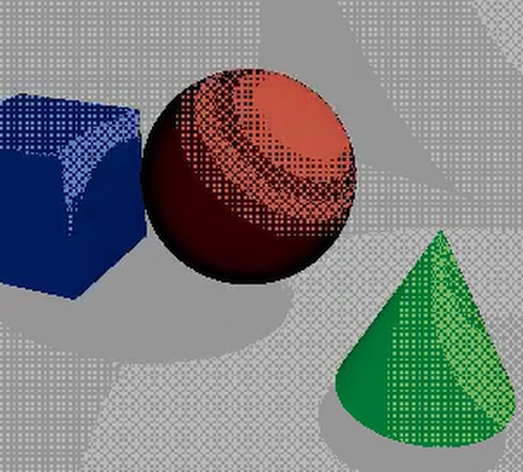
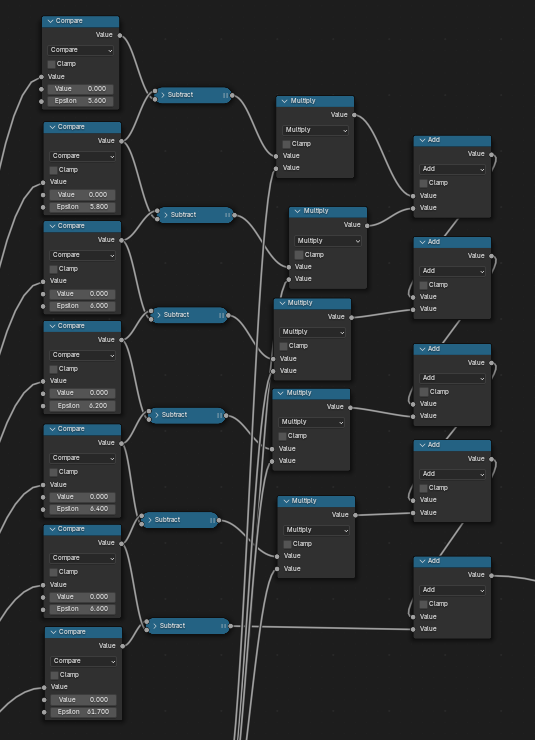
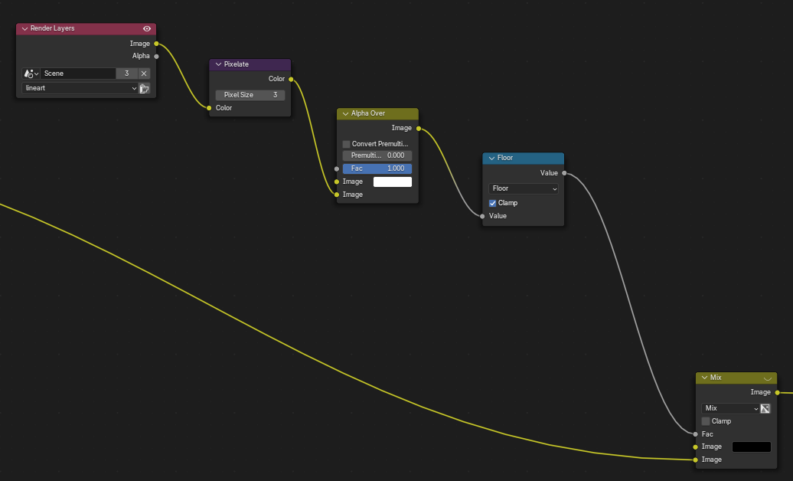
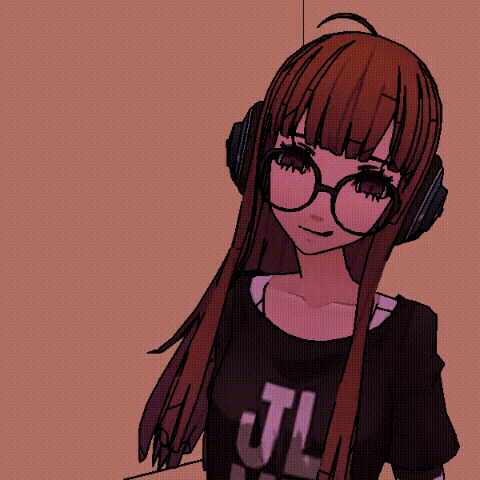

PC98 style pixel art in blender compositor
date:thu 2025-07-03
this blog was supposed to come out MONTHS AGO but between college, computer reformatting, recreating this file, college again, ect. ect. this ended up thrown to the side. but i felt i should finish this before moving to write anything else...
i don't hide my preference for old PC games and old tech generally, especially 90s and 80s era computers, and well over a few months ago i learned of the PC9800, a japanese computer created by NEC targeted at businesses, with a special chip for rendering kanjis. that, along with being an open platform, made it a perfect platform for visual novel games. i was fascinated by the style that developed in these games, a mix of anime and pixel art. especially after stumbling onto this PC98 shrine, which ultimately spiraled into me making this project to see if i can recreate it in blender's compositor.
enough ramblings
for the main dither i used this medium article as base, except there were a problem as that node setup relies on vectors and texture coordinates to generate the pattern, neither of which exist in the compositor, so i needed alternatives or recreations.

the point of the texture coordinates was to get a horizontal and a vertical gradient to use for creating the pixels. they can be easily replaced with 2 blend textures with the orientations needed. now we multiply each texture by a specific value that will determine the size of our pixels(more on it in a bit), preferably you want to add a value node to make sure they both have the same value(although stretched pixels could look interesting if you wanted that), followed by a floor that will give us a clean pixel.
shading patterns
in pixel art it is common to represent different shades through different dithering patterns, numbered from darkest to lightest.
- pattern 1: insert each texture into a floored modula with a value of 2, then multiply them by each other.
- pattern 5: take the output of pattern 1 and inverse it by subtracting it by 1. this creates a problem that will be addressed in a bit
- patterns 4: create both an add and a substract and plug both textures into them. put the output of the add into a calmped floored modula with a value of 4, and put the output of the subtract into a clamped wrap with a max of 4 and a min of 0. finally multiply the outputs of the floored modulo and the wrap together.
- pattern 2: take the output of pattern 4 and inverse it by subtracting it by 1. same problem mentioned with pattern 5, again will be addressed shortly.
- pattern 3: add the two textures together, then blug the result into a floor modulo with a value of 2
about the problem
patterns 2 and 5 are negative versions of patterns 4 and 1 respectively, created by taking the original pattern and subtracting it by 1, creating a negative value. this is fine for a shader, but in the composite this results in inverted colors(shown above). the best solution i found for this was to multiply(clamped) patterns 2 and 5 by -1, which solved the problem.
shading data
now we will get the shading data then separate them to choose where each pattern of dither will appear. personally i use cycles(low pass number) with the denoising data, diffuse direct, diffuse color, and ambient occlusion(AO) passes turned on in the view layer.
now multiply the diffuse direct and AO passes and insert the output into a denoise node, with the denoise normal and albino inserted. i personally find fast prefilter and follow scene quality to be good enough, but this might be up to you.
insert the denoise output into a pixelate node, the reason and value will be explained in a bit, for now we will leave it at 1. finally multiply this value by the number of shades we will have, here we have pure bright, 5 dither patterns, and pure dark, making 7 in total. so we will set the multiply to 7
separating shades

for separation, a few compare nodes will do the job, one for each degree of shade. the exact values for the epsilon, what determines where our of the compares will depend on your preference and scene, but i personally went with the following:
- 0.5
- 0.7
- 0.9
- 1.1
- 1.3
- 1.5
- 82.4(you can put whatever big number here it doesn't matter
then we subtract each compare from the one below it(example: compare[2]-compare[1], i.e compare[2] is in the top socket, while compare[1] is below) to get specific zones we can apply the patterns to, which we do by multiplying each of the patterns with it's respective subtract in order, except the last one.
finally add all the multiply nodes' outputs, along with the final subtract, to generate a hashed tone map.(shown below)
now we take the tone map we created and use it to change colors. i personally used it as the factor of a mix node, with the two values being the diffuse color pass, and a version of it multiplied by a light purple, although using it as the fact of a color correct node also yielded nice results.
keeping the pixels sharp
you might have noticed a problem while making this, that being the pixels getting cut off. this is because the original shading data isn't pixelated, they are normal smooth gradients, so when we create the sections they don't follow any squared grid and transition from one pattern to another mid pixel.
this problem is where the pixelation node's role shows up. the pixelation, if set to the right value, will force the shading data to follow a squared grid and solve our problem.
the exact value of the pixelation requires a little math, it should be your render resolution/scale of the blend textures created at the start. example: my render is 600x600px, and i set my scale to 100, so the pixelation should be 6.
highlights
highlights are the exact same as shadows, except with way higher values. i choose the values:
- 5.6
- 5.8
- 6.0
- 6.2
- 6.4
- 6.6
- 61.7(again, you can put whatever big number here it doesn't matter
then use this output as factor for mixing the shaded image with any colors you choose the highlights to be, i went with a light beige.
Line art
for line art i used a baked line art object, placed on it's own view layer following this guide, creating the exact line art we need.
then insert that layer's render pass into a pixelation node, making sure the pixelation's value is correct as explained above, then put it's output through an alpha over node and a clamped floor node. sense the line art's layer has a transparent background, the pixelations creates semi transparent pixels which we don't want, the alpha over and floor nodes prevent this.
finally use the output of the floor node as the factor to mix your rendered scene, and the color you want your lineart to be, i choose black.
Final thoughts
the example above was rendered without highlights, as i personally find them ugly
this setup is by no means perfect, as non square resolutions result in the pixels getting stretched, i have tried experimenting with giving each texture it's own scale but haven't had much success. i am very open for suggestions on how to fix this problem
i want to automate the calculation of the pixelation nodes, but i am not that familiar with drivers so it is outside of my skill set.
i feel the textures are missing up the vibes(this is the in game futaba model. thanks VGresource i love you), probably should have lowered their resolution in krita before .. maybe next time.
i am hungry